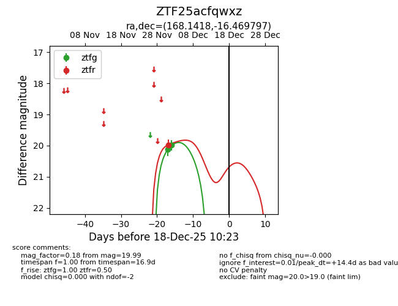
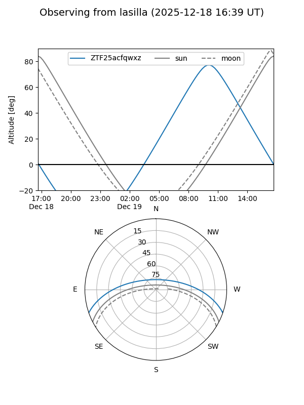
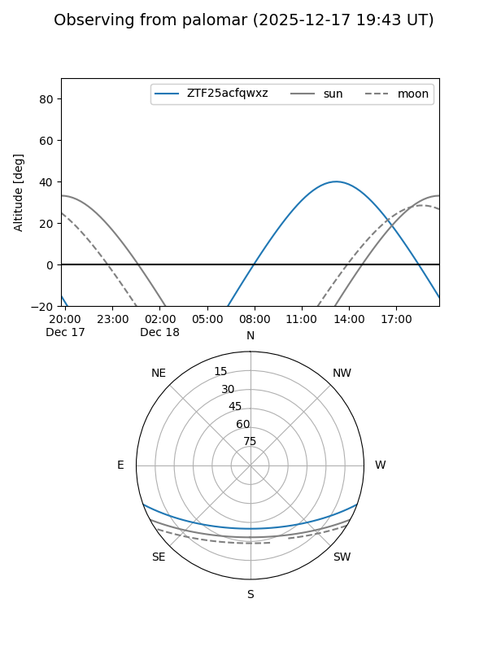

ZTF25acfqwxz
Target ZTF25acfqwxz at 2025-12-18 11:17
Aliases and brokers:
FINK: fink-portal.org/ZTF25acfqwxz
Lasair: lasair-ztf.lsst.ac.uk/objects/ZTF25acfqwxz
ALeRCE: alerce.online/object/ZTF25acfqwxz
alt names
ZTF25acfqwxz (ztf,fink_ztf)
Coordinates:
equatorial (ra, dec) = 168.1418,-16.46980
equatorial (HMS+DMS) = 11:12:34.03,-16:28:11.27
galactic (l, b) = (271.2427,+40.24067)
Photometry
last ztfg=19.99, ztfr=19.97
2 ztfg, 1 ztfr detections
Lightcurve

Visibility


Additional plots